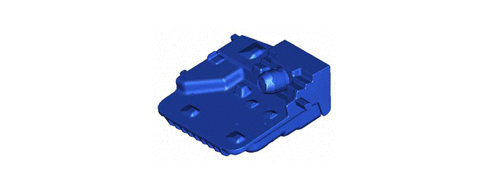
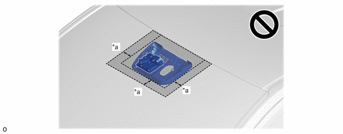

| Last Modified: 10-07-2025 | 6.11:8.1.0 | Doc ID: NM100000002GLTF |
| Model Year Start: 2024 | Model: Tacoma | Prod Date Range: [12/2023 - ] |
| Title: ADVANCED DRIVER ASSISTANCE SYSTEM: FRONT CAMERA: FORWARD RECOGNITION CAMERA; 2024 - 2026 MY Tacoma Tacoma HV [12/2023 - ] | ||
FORWARD RECOGNITION CAMERA
CONSTRUCTION
(a) Forward Recognition Camera
(1) Forward recognition camera is mounted in the upper center of the windshield glass. It detects vehicles and other objects on the road ahead using the image captured by the built-in camera and determines their distance. With this, the recognition performance and reliability has been enhanced.
(b) To Avoid Malfunction of the Forward Recognition Camera
(1) Observe the following precautions. Otherwise, the forward recognition camera may not operate properly, possibly leading to an accident resulting in death or serious injury.
- Keep the windshield clean at all times.
- If the windshield is dirty or covered with an oily film, water droplets, snow, etc., clean the windshield.
- If a glass coating agent is applied to the windshield, it will still be necessary to use the windshield wipers to remove water droplets, etc. from the area of the windshield in front of the forward recognition camera.
- Do not attach objects, such as stickers,
transparent stickers, etc., to the outer side of the
windshield in front of the forward recognition camera
(shaded area in the illustration). 
*a
Approximately 4 cm (1.6 in.) from the forward recognition camera cover.
-
-
- If the part of the windshield in front of the forward recognition camera is fogged up or covered with condensation, or ice, use the windshield defogger to remove the fog, condensation, or ice.
- If water droplets cannot be properly removed from the area of the windshield in front of the forward recognition camera by the windshield wipers, replace the wiper insert or wiper blade.
- Do not attach window tint to the windshield.
- Replace the windshield if it is damaged or cracked.
- Do not allow liquids to contact the forward recognition camera.
- Do not allow bright lights to shine into the forward recognition camera.
- Do not dirty or damage the forward recognition
camera.
- When cleaning the inside of the windshield, do not allow glass cleaner to contact the lens of the forward recognition camera. Also, do not touch the lens.
- Do not subject the forward recognition camera to a strong impact.
- Do not change the installation position or direction of the forward recognition camera or remove it.
- Do not disassemble the forward recognition camera.
- Do not modify any components of the vehicle around the forward recognition camera (inside rear view mirror, etc.) or ceiling.
- Do not attach any accessories to the hood, front grille or front bumper that may obstruct the forward recognition camera.
- If a surfboard or other long object is to be mounted on the roof, make sure that it will not obstruct the forward recognition camera.
- Do not modify the headlights or other lights.
(2) If the system determines that the windshield may be fogged up, it will automatically operate the heater to defog the part of the windshield around the forward recognition camera. When cleaning, etc., be careful not to touch the area around the forward recognition camera until the windshield has cooled sufficiently, as touching it may cause burns.
(3) In the following situations, recalibration of the forward recognition camera will be necessary.
- When a windshield is removed and installed, or replaced.